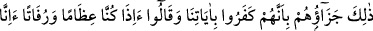

Bu âyetle “Onun (cehennemin) öfkesini ve horultusunu işitirler.” (el-Furkân,
25/12)”, “günahkarlar ateşi gördüler.” (el-Kehf, 18/53)” ve “o zaman ölümü
çağırırlar.” (el-Furkân, 25/13)” âyetleri nasıl uzlaştırılır denirse şöyle derim: İbn
Abbas (r.a.) âyetin anlamının şöyle olduğunu söylemiştir: “Onlar kendilerini
sevindirecek bir şey görmezler, kendilerinden kabul edilecek bir şey konuşmazlar,
kulaklarına hoş gelecek bir şey duymazlar. Çünkü dünyadayken âyetleri ve ibretleri
görmek istemezler, hakkı söylemezler ve dinlemezlerdi” Mukâtil şöyle demiştir:
“Onlara “Alçaldıkça alçalın orada! Bana karşı konuşmayın artık!” (el-Mü’minûn,
23/108)” denilince hepsi kör, sağır dilsiz olur.” Allah’ın gazâbından yine O’na sığınırız.
et-Te’vîlâtü’n-Necmiyye’de şöyle der: Onlar dünyada süflî şeylerin peşine düşüp
dünya ziynetlerine ve şehvetlerine yüzükoyun kapandıkları için onları hakka karşı kör,
hakkı söylemeye dilsiz, hakkı dinlemeye sağır olarak haşrederiz. Böyle olması ise
ruhlara serpilen nûrun onlara isâbet etmemesindendir. “Bu dünyada kör olan kimse
âhirette de kördür; üstelik iyice yolunu şaşırmıştır.” (el-İsrâ, 17/72) Hz. Peygamber
(s.a.) şöyle buyurmuştur: “İnsan nasıl yaşadıysa öyle ölür ve nasıl öldüyse öylece
haşrolur.”[150]
“Onların varacağı ve kalacağı yer” evleri ve meskenleri “cehennemdir ki ateşi
yavaşladıkça onun alevini artırırız.” Yâni onlar için yakıcı ateşi ziyâdeleştiririz ya da
onların üzerine ateşi yüksek eyleriz. Onların derilerini ve etlerini yiyip yakıp yok etmek
sûretiyle ateşin alevi dinince ve dokunacağı bir şey kalmayınca onların derilerini
yenilemek sûretiyle yeniden ateşlerini artırırız. Ateş tekrar alevli ve yakıcı hale gelir.
“Onların derileri pişip acı duymaz hale geldikçe, derilerini başka derilerle
değiştiririz.” (en-Nisâ, 4/56)” âyeti ateşin onlara azap vermede derilerini kızartmanın
ötesinde yakmaya ve yok etmeye varmadığına delâlet ediyor denirse, şöyle cevab
veririm: ‘Pişmek’ ateşin mutlak olarak te’sir etmesinden mecazdır. Sonra zikredildiği
şekliyle derinin yok edildikten sonra yenilenmesi, ölümden sonra yeniden diriltilmeyi
tekrar tekrar inkâr etmelerinin cezasıdır. Tâ ki tekrar tekrar bunu gözleriyle görsünler.
Çünkü onlar bunu bir delil bilmemişlerdi. Nitekim aşağıdaki âyet bu husûsu
açıklamaktadır:
98. Cezaları işte budur! Çünkü onlar, âyetlerimizi inkâr etmişler ve: “Sahi bizler,
bir kemik yığını ve kokuşmuş toprak olduktan sonra yeni bir yaratılışla diriltilmiş
mi olacağız?” demişlerdir.
“Cezaları işte budur! Çünkü onlar,” tekrar diriltmenin doğruluğuna açıkça delâlet
eden aklî ve naklî “âyetlerimizi inkâr etmişler”